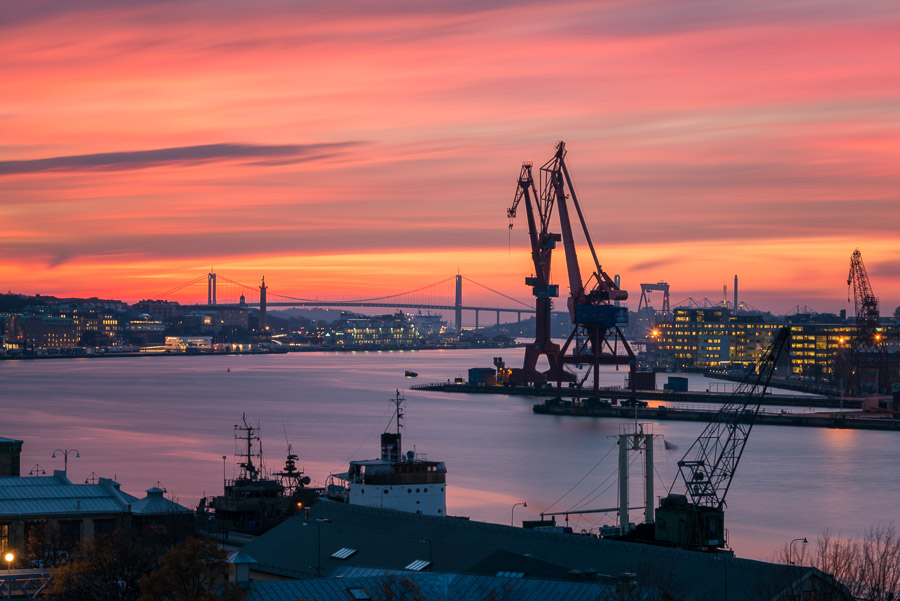
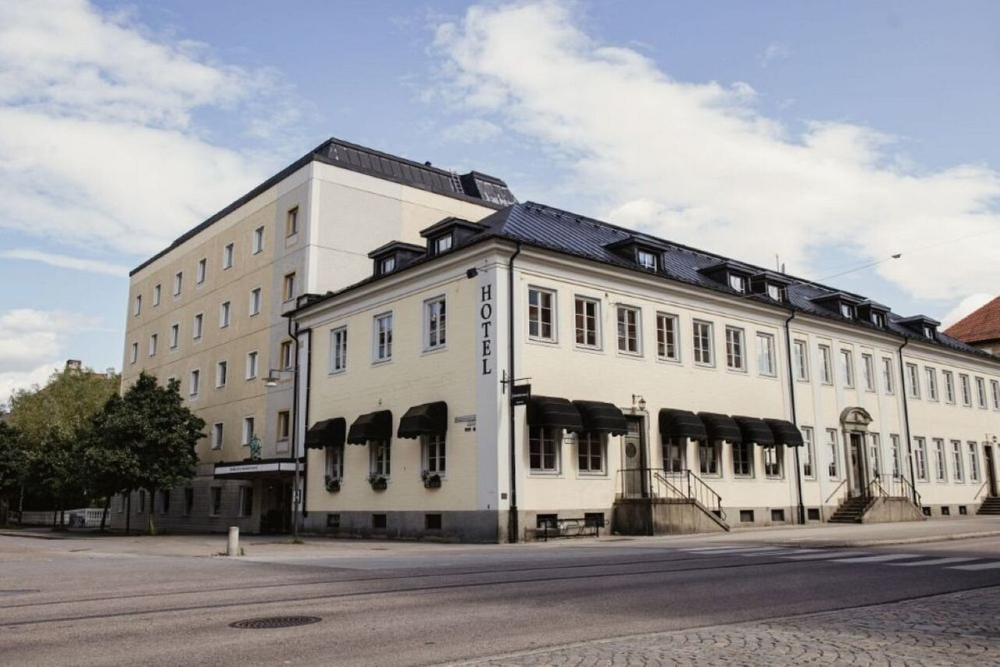
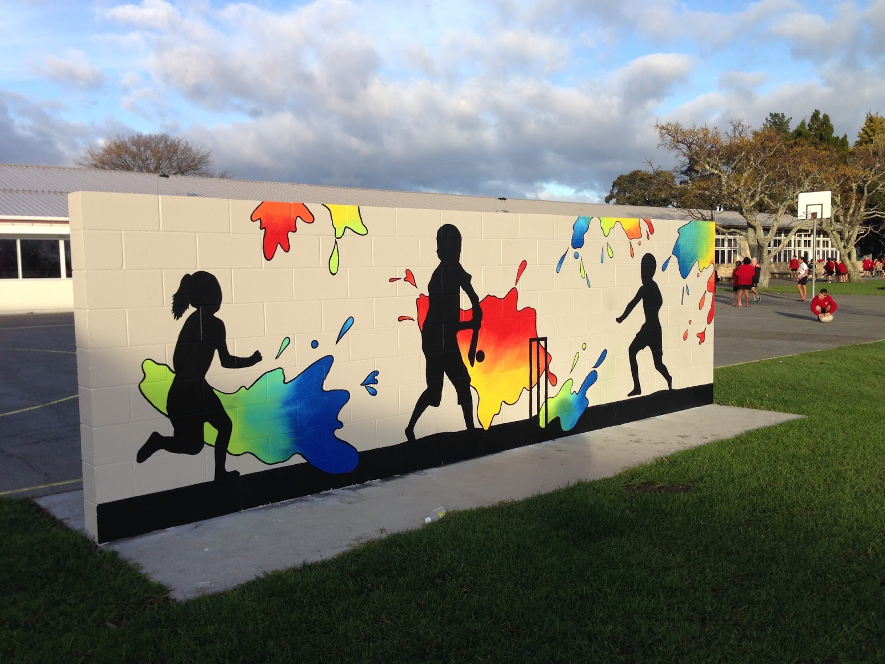

Låt oss sätta färg på din idé!
Tillsammans skapar vi något unikt. Börja din resa med oss – gå direkt till våra produkter eller kontakta oss för att prata om ditt nästa projekt.
Förra projekt
Väggmålningen i Göteborgs hamn
Ett av våra mest minnesvärda projekt på Penseldrag AB var när vi fick uppdraget att skapa en väggmålning i Göteborgs hamn. Beställaren, ett logistikföretag, ville ha något som speglade både stadens historia och framtid. Vi arbetade under tre veckor i kyla och blåst, men resultatet blev en 60 meter lång mural med skepp, kranar och moderna containers i färgstarka toner. Projektet drog till sig lokalpress och många förbipasserande stannade för att fotografera. Det blev ett levande landmärke och en stolthet för hela teamet. Vår största utmaning var att få färgerna att hålla mot saltvattenluften – men efter noggrann lackering står målningen fortfarande kvar, lika stark som vår passion för hantverket.
Kontorsmiljö med karaktär – IT-företaget i Uppsala
När ett växande IT-bolag i Uppsala kontaktade oss ville de ha ett kontor som kändes mer kreativt än sterilt. De önskade “något som inspirerar kodare men samtidigt känns lugnt”. Vi tog fram en färgpalett i grönt, grått och trätoner, och skapade handmålade mönster längs korridorerna – subtila kretskortsliknande linjer som symboliserade innovation. Projektet pågick i fyra veckor och krävde noggrann planering för att inte störa det pågående kontorsarbetet. När allt var klart hade de fått en helt ny atmosfär, och vi fick vår första designutmärkelse från Uppsala Näringslivsråd. Det blev ett bevis på att penseldrag kan skapa stämning lika mycket som väggar.
Renoveringen av det gamla stadshotellet i Falun
Ett annat minnesvärt projekt var restaureringen av det gamla stadshotellet i Falun. Byggnaden hade anor från 1800-talet och måleriarbetet krävde både fingertoppskänsla och respekt för historien. Vårt uppdrag var att återställa originalfärgerna i salongerna och korridorerna, samtidigt som vi moderniserade några delar för dagens gäster. Vi blandade egna pigment, slipade fram gamla mönster under lager av färg och dokumenterade varje steg. Resultatet blev en harmonisk blandning av dåtid och nutid, där varje rum berättade sin egen historia. När hotellet återinvigdes med livespelning och ljusshow, stod vi i publiken – stolta över varje penseldrag som format dess nya liv.
Skolprojektet i Karlstad – färg för framtiden
Ett av våra mest hjärtevärmande uppdrag kom från en grundskola i Karlstad. Rektorn ville att eleverna skulle känna mer glädje och trygghet i sina korridorer. Vi bjöd in skolklasserna att delta i idéarbetet, och barnens teckningar blev inspiration för hela designen. Under sommarlovet målade vi lekfulla former, naturmotiv och citat på väggarna. Ett särskilt hörn målades med en matt färg där barnen kunde skriva med kritor och torka av själva. När eleverna kom tillbaka efter sommaren stod de tysta i dörren – sedan började de applådera. Det ögonblicket påminde oss varför vi gör det vi gör: att skapa färg som gör skillnad.
